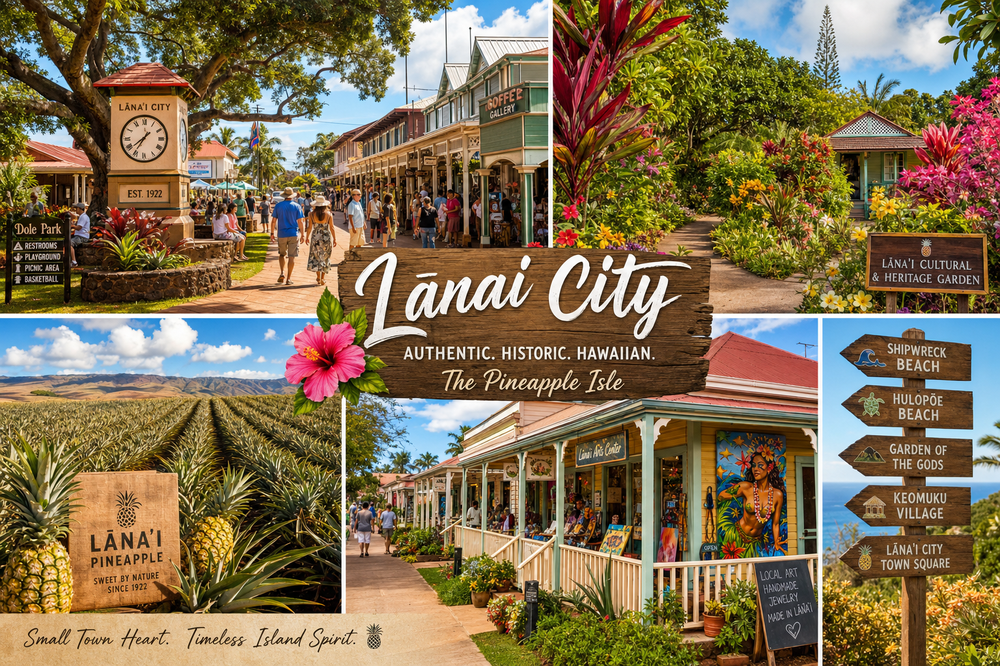

Lanai City is unlike any other town in Hawaii. At 1,600 feet elevation in the center of the island, it has a cooler, misty quality that feels worlds away from the beach resorts below. The town was built in the 1920s as a plantation village for the Dole pineapple operation and retains much of its original character — a small grid of streets lined with colorful plantation homes, mature Cook Island pines, and a central square that serves as the community's heart.
Dole Park
The heart of Lanai City is Dole Park, a large green square surrounded by shops, restaurants, and the local community center. On weekend mornings, local families gather here, children play on the grass, and you can watch the town wake up over coffee from one of the nearby cafes. The giant Cook Island pine trees that frame the park are iconic — some are over 100 years old. This is the best place to feel the pulse of authentic Lanai community life.
The Lanai Culture & Heritage Center
This free museum on 7th Street offers the most comprehensive introduction to Lanai's complex history — from ancient Hawaiian settlement through the various plantation eras (cattle, sugar, and pineapple) to its current incarnation as a luxury destination. The center includes photographs, artifacts, and oral history recordings from longtime island residents. For history lovers, it's a must-visit.
Saturday Farmers Market
Every Saturday morning, a small but excellent farmers market sets up near the park. Local vendors sell fresh produce, homemade jams, baked goods, and crafts. It's a window into daily Lanai life and a great way to connect with local people who rarely interact with tourists. Come early — the best items sell out by 9am.
Hiking Koloiki Ridge Trail
The Koloiki Ridge Trail begins right at the edge of Lanai City and offers sweeping views of Maui, Molokai, and the central plains of Lanai. The 5-mile round trip hike through the Cook Island pine forest is one of the most beautiful in Hawaii. We provide trail maps at the inn and can arrange guided hikes for guests who want local expertise.